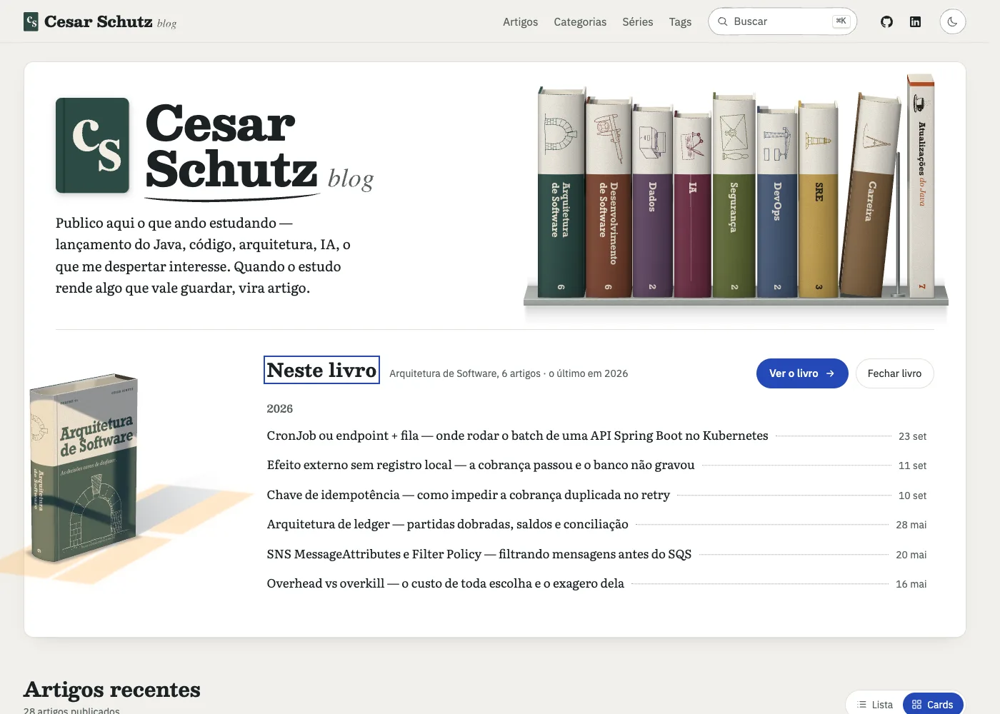
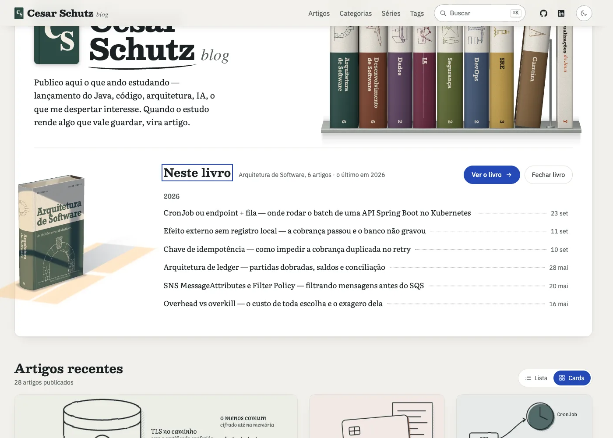
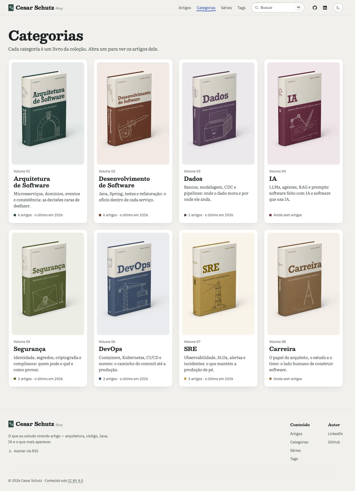
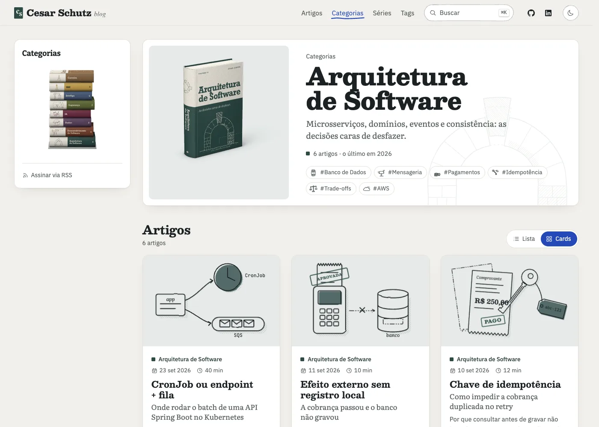
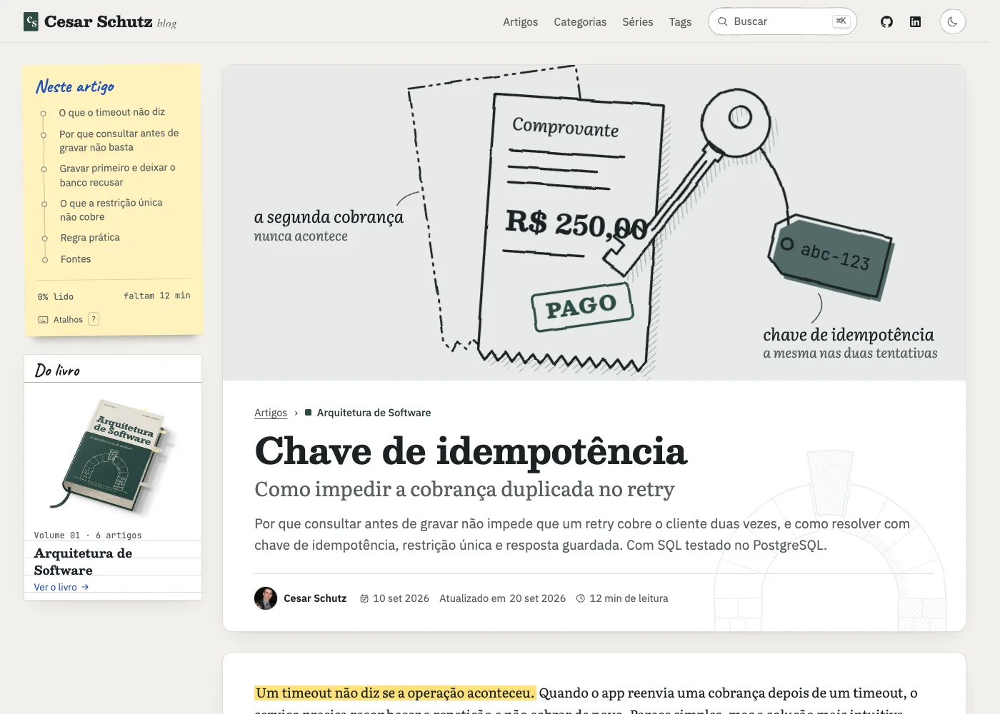
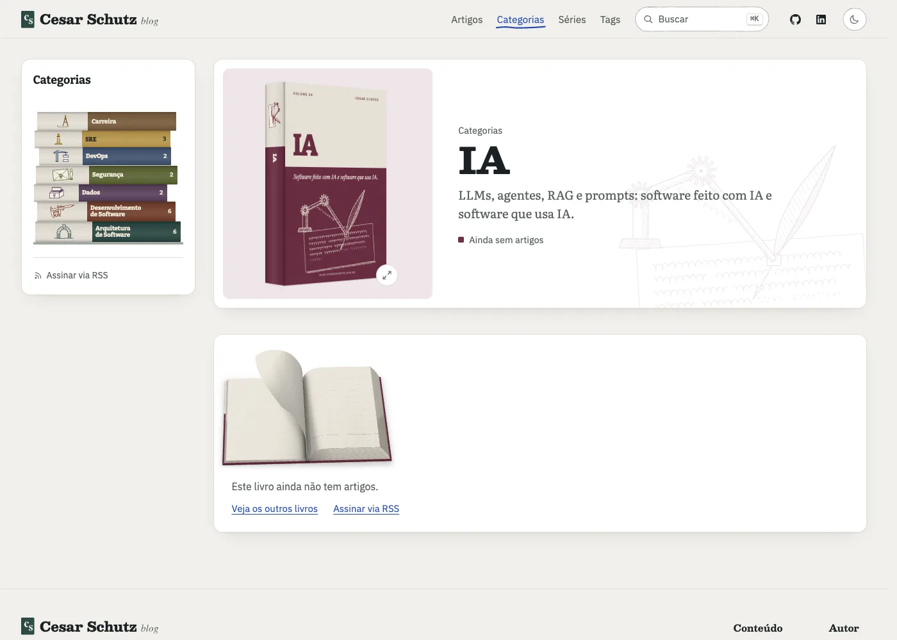
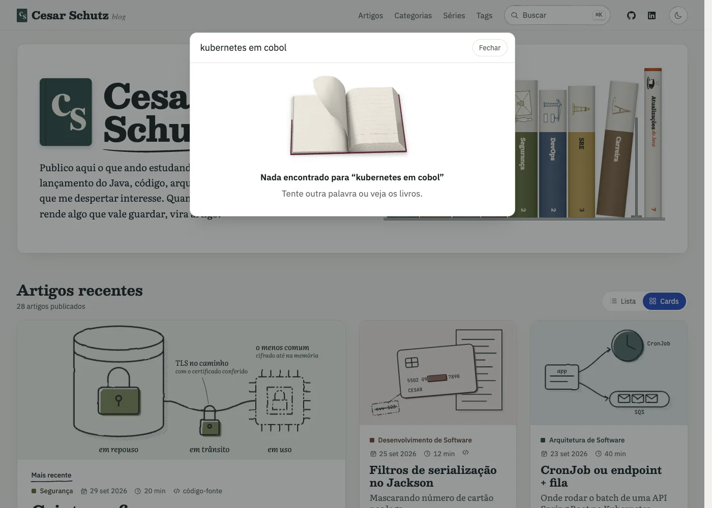
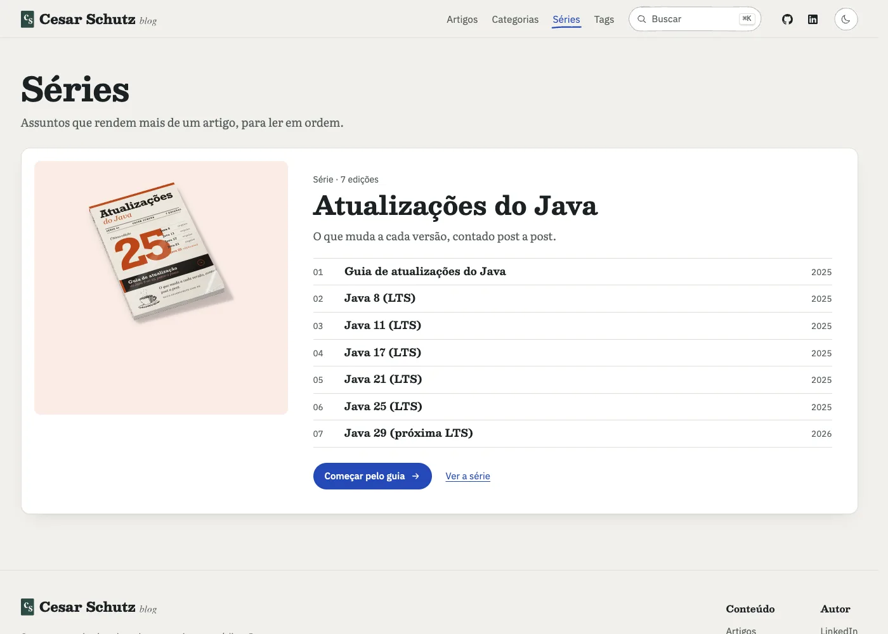

Maquetes
Rascunho: as páginas de verdade do blog com o livro de hoje trocado pela prancha realista, no lugar decidido. Serve para ver como fica; o acabamento vem depois da aprovação. Voltar às pranchas
Home: estante (07)
A estante realista no topo, e a gaveta aberta embaixo.

Home: gaveta com a luz de janela (10)
O livro tirado da estante aparece na gaveta, sob a luz de janela.

Categorias: capa dura (01)
Cada livro da grade na capa dura em três quartos.

Página do livro: pilha (08) e capa dura (01)
A pilha na lateral e o livro em pé no topo.

Artigo: ficha "Do livro" com o livro deitado (04)
O livro deitado com a fita e as etiquetas. Na versão final, cada etiqueta é um artigo do livro, e a amarela é o que você está lendo.

Livro sem artigos: livro aberto em branco (06)
Pequeno, no aviso de livro ainda sem artigos (IA e Carreira).

Busca sem resultado: livro aberto em branco (06)
O mesmo livro aberto, pequeno, quando a busca não acha nada.

Séries: a série (09)
A série do Java. No fim, se der tempo: livro próprio, fora da coleção, em vez de revista.
